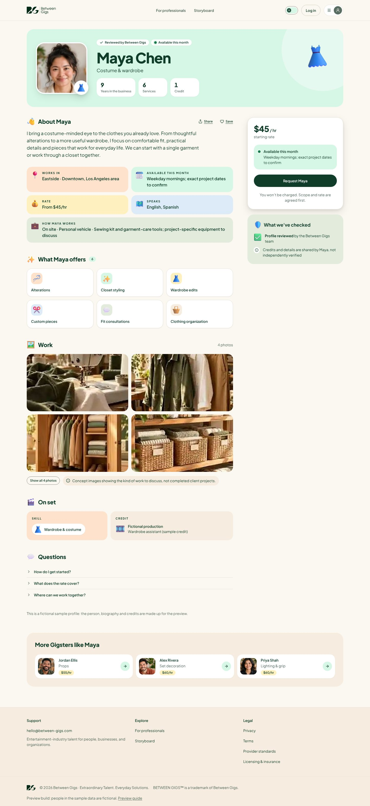
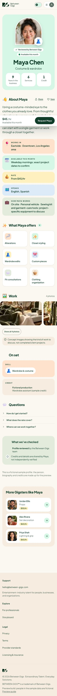

Profile page design, ready to lock
This is the profile clients will see (Maya Chen, a fictional sample). Once you approve it, we treat this design as locked: later work keeps it as is, and any change to it comes back to you first.
Desktop · 1440px

Phone · 390px

What gets locked
- The layout: identity panel on top, the story on the left, the booking card on the right (a bar at the bottom on phones).
- The sections and their order: about, facts, what they offer, work, on set, what we've checked, more Gigsters.
- The look: direction B (warm and friendly), Plus Jakarta Sans, pastel fact blocks, 3D icons, light and dark.
- The no-photo state: the person's craft in a spotlight.
What can still change
- Real photos and words: each Gigster fills in their own.
- Booking: "Request" is a preview until requests open.
- Small fixes for accessibility or broken layouts, without changing the design.
How to sign off
1
Open the live profile in light and dark, on a laptop and a phone.
2
Reply "Approved" (or list what to change) on WhatsApp.
3
We record the approval and lock this design.
Status: waiting for approval · 4 November 2026 · Onboarding flows to compare · Onboarding flow map